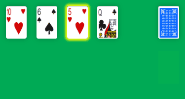
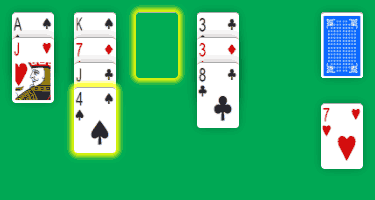

Since the beginning of the year, I “quickly” added a few games to Solitaire-Play. It hasn't been too difficult since they are simple solitaires to code. It help a lot that last year I spent a couple of week-end to standardize the JavaScript sources from my first games.
In January, I launched Aces Up Solitaire, a popular and very simple solitaire to play online. In fact, it's one of the many solitaires known as “Idiot's Delight”. It's by this descriptive name that I first played it from Randy Rasa Solitaire Suite for MS-DOS. Back in these days, I even wrote a Visual Basic version and named it “Four Kings” as I (mis)ranked cards from Ace to King.
Aces Up Solitaire is played with a single pack of 52 playing cards. The good thing is you doesn't need a big surface to lay out cards. You start the tableau with 4 columns, each one with only a card face up. The remaining cards forms a face down stock pile on the side.
The goal of the game is to finish with only the four Aces in the tableau, by removing all other cards. You can discard any top card to the waste when there is a card with a greater rank for the same suit in another stack. Aces have the highest rank and cards rank from 2, 3, 4 ... to Queen, King and Ace.

For example, you can move the 5 of Hearts to the waste because there is a 10 of Hearts in the first column. When no more move is possible, deal out four new cards from the stock onto each of the four stacks. Then you look again for any move available.
As you remove cards from the tableau, you can get an empty column. Place any top cards from another column in this free spot.

In this case, we can move the 4 of Spades to the empty pile. Then the Jack of Clubs will be available to discard the 8 of Clubs in the last column.
The game continues until the stock runs out and there is no more cards to remove. You win if only the four Aces left on the tableau.
As you can see, Aces Up Solitaire is really simple to play, but you will learn it's not so easy to win (less than 5%)! Anyway, it's an interesting occupation and once in a while, it's nice to play something else than Klondike Solitaire.
As usual with Solitaire-Play games, you can play Aces Up Solitaire for free on desktop, tablet or phone...
Michel (2018/03/27)